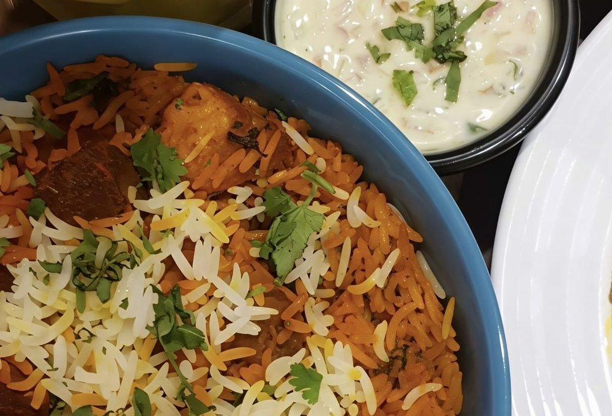

Malay & Indian
Darussalam Kitchen
Darussalam Kitchen brings everyday comfort food to a relaxed neighbourhood setting. Guests can enjoy fragrant rice, rich curry and familiar favourites without spending too much. The simple dining room is suitable for families, students and colleagues who want an easy meal together. Its menu focuses on generous portions and approachable flavours, making it a convenient choice for a casual lunch or dinner.
Signature dishes
- Chicken Biryani RM 22
- Roti & Curry Set RM 15
Average per person: RM 24Deposit: RM 20
Reserve a table